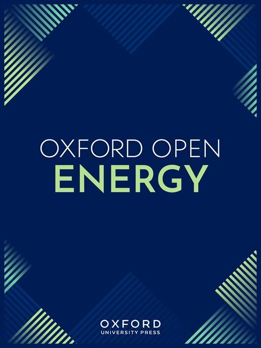
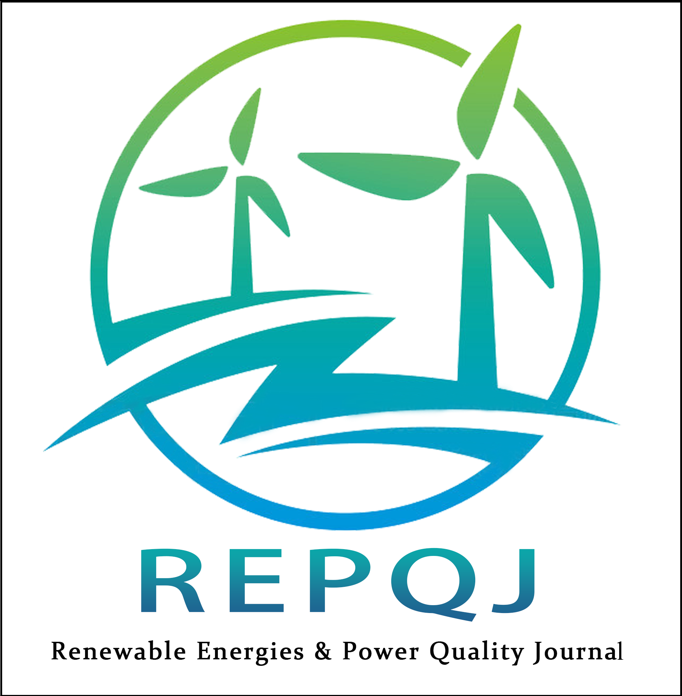

Publications
Strategic Roadmap for Offshore Wind Energy Development in Bangladesh: A Review
Authors: Sheikh Saimon Ahamed Abir, Md Refaiath Hossain
Journal: Oxford Open Energy
Publisher: Oxford University Press
Journal Location: United Kingdom
Year: 2026
Status: Published

Abstract: Bangladesh is facing a growing demand for sustainable and reliable energy sources due to challenges posed by rapid industrialization and a high dependency on imported fossil fuels. Climate change is another major issue. Offshore wind energy presents a promising opportunity to diversify Bangladesh’s energy mix and provide a cleaner source of energy. This review explores the potential of offshore wind energy, wind resource availability at various sites, technological adaptations, and offshore policy frameworks for Bangladesh. The study identifies optimal sites for offshore wind development in Bangladesh, including Cox’s Bazar, Sandwip, and the Bay of Bengal. It also identifies key challenges, including the absence of a dedicated offshore wind policy, cyclone resilience, and the effects of high humidity on offshore wind turbines. The paper draws lessons from pioneer countries such as China and the UK to propose a phased roadmap for Bangladesh. Some strategic recommendations are highlighted, such as establishing a national offshore wind authority, adopting cyclone-resistant turbine designs, and implementing financial incentives to attract investment. By addressing technical, economic, and regulatory barriers, Bangladesh can harness enough offshore wind energy to achieve its renewable energy targets by 2041.
Machine-Learning-Accelerated Design Exploration of Floating Offshore Wind Turbine Mooring Systems Using OpenFAST-Based Parametric Simulations
Authors: Sheikh Saimon Ahamed Abir, Md Refaiath Hossain, Sohanur Rahman, Tanvir Anam Tipu
Journal: Results in Engineering
Publisher: Elsevier
Journal Location: Netherlands
Year: 2026
Status: Published
Abstract: This study investigates the dynamic response and mooring line tension behavior of a floating offshore wind turbine under representative Bay of Bengal environmental conditions relevant to Bangladesh offshore waters. A hybrid framework combining high-fidelity OpenFAST simulations with machine learning based surrogate modelling was developed to rapidly predict key response metrics of a floating offshore wind turbine mooring system. A parametric dataset consisting of 324 OpenFAST simulations was generated using NREL5-MW turbine coupled with OC4-DeepCwind semi-submersible platform. The simulations considered variations in wind and wave parameters, mooring line length factor, pretension factor, and axial stiffness factor. Random Forest regression models were trained to predict four critical response quantities. Model robustness was evaluated using five-fold cross-validation, yielding coefficients of determination greater than 0.98 for all response variables. The surrogate models were further validated using unseen 36 independent OpenFAST simulations. The validation results demonstrated strong agreement between predicted and simulated responses, with surge prediction errors below approximately 3.5m and mooring tension errors within N. Feature importance analysis revealed that mooring line length and pretension are the dominant parameters governing platform response and mooring loads. The trained surrogate model was also used to evaluate 2,883 candidate mooring configurations, from which 2,598 globally safe designs were identified under the adopted response limits. The results demonstrate that the proposed framework enables rapid prediction of floating wind turbine responses under Bay of Bengal metocean conditions and provides a practical tool for preliminary mooring design and feasibility assessment of floating offshore wind systems in Bangladesh offshore regions.
High Hub-Height Wind Resource Assessment for Coastal Bangladesh: Energy-Based Validation and Turbine Height Optimization Under Cost Scaling
Authors: Sheikh Saimon Ahamed Abir, Md Refaiath Hossain, Sohanur Rahman
Journal: Renewable Energy and Power Quality Journal
Publisher: Cultech Publishing
Journal Location: Malaysia
Year: 2026
Status: Published

Abstract: This study evaluates high hub-height wind resource potential (80–200 m) in two coastal regions of Bangladesh (Kuakata and Sandwip) to identify energy-efficient and cost-informed turbine height ranges under modern wind configurations. WRF-based wind data from the NLR Wind Resource Data Base (WRDB) for the years 2011–2021 were analysed using five Weibull parameter estimation methods. Model performance was assessed using both statistical (RMSE) and energy-based (RPDE) validation metrics. Results show that wind power density increases consistently with hub height, reaching 161.85 W/m² at Kuakata and 164.82 W/m² at Sandwip at 200 m. The Energy Pattern Factor Method produced the lowest RPDE values (<0.6%) across all heights, indicating superior accuracy in energy estimation. However, the rate of energy gain decreases with height when compared to the corresponding increase in structural cost. A normalized tower cost-scaling framework was integrated with wind resource results to evaluate marginal energy–cost efficiency. Sensitivity analysis (α = 1.5–2.0) identified optimal hub-height ranges of 100–140 m for Kuakata and 120–180 m for Sandwip. These ranges provide the most efficient balance between energy gain and cost escalation. Within these optimal ranges, estimated annual energy production is approximately 6.1–6.6 GWh per turbine for Kuakata and 6.1–7.0 GWh per turbine for Sandwip, corresponding to capacity factors of approximately 14.6%–16.7%. The analysis is based on mesoscale data and simplified cost modelling and does not account for site-specific measurements or full project economics. The proposed framework provides screening-level decision support for wind energy planning in coastal Bangladesh and offers a transferable methodology for hub-height optimization in emerging wind markets.